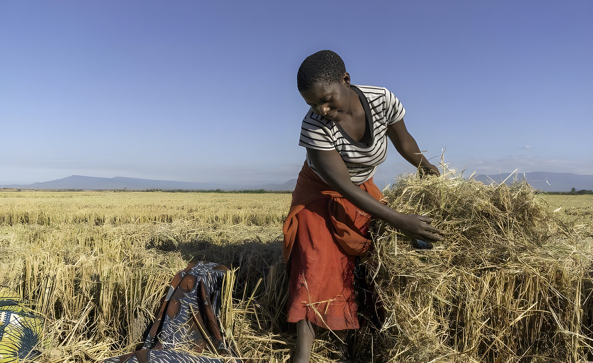

Home / Chapter 5
Chapter 5 of 5 · Towards 2050Vision 2050: from survival to prosperity
Africa's smallholders produce 80 per cent of the continent's food and employ 80 per cent of its workforce, yet most still farm to survive. After four decades in the fields, Mahesh Patel believes agriculture can carry sub-Saharan Africa to middle-income status. This is the case he makes.

Connect the system, and the same farmer prospers
Interventions designed one at a time rarely add up. The vision asks for an ecosystem planned together, run on commercial terms, and judged by whether farmers become more prosperous.
Seed without water. A loan without a buyer. Each service arrives alone, on its own timetable, and the farmer carries all of the risk.
Seven services planned together and run on commercial terms. The same farmer, on the same land, becomes an enterprise.
Select a serviceChoose any circle to see its role.
Five shifts from survival to prosperity
Our summary of the book's argument: each shift replaces a pattern that has kept African agriculture small with one that lets it compound. Keep scrolling to move through them.
What leaders, investors and policymakers must do differently
Part III of Abundance turns the lessons of rice, sugar, cashew and pulses into five remedies for the “dysfunction and gridlock” that hold the continent back.
Mobile internet for all
Affordable connectivity brings learning, markets, digital payments and skills to every village. Internet penetration in sub-Saharan Africa is still only about 26 per cent.
Fix broken supply chains
Warehouses close to the farm, and a working warehouse receipt system, let farmers borrow against stored crops instead of selling at harvest, when prices are lowest.
Bring back the youth
Technology, cooperatives and locally adapted seed can make farming a career that pays young people to stay.
Skilling
In 1997, young people flocked to Technobrain in Nairobi to learn computers. The same hunger for skills can power modern agriculture.
Bank on human capital
A youthful continent is its greatest asset. By 2050, Africa's workforce is projected to reach 1.2 billion.
The decisive turn lies in power and technology
As electricity reaches farms, irrigation spreads, storage and processing grow stronger, and digital networks link smallholders to markets, the cycle of subsistence breaks. Villages cluster into enterprises, and farming shifts from survival to a system of livelihoods. The book argues for renewable power on the farm: run-of-the-river hydro, mini-grids and energy from farm waste, of the kind that already runs the Kisiwa sugar mill in Zanzibar.
“I envision a future with a billion-strong sub-Saharan middle class by 2030, living in a thriving digital economy.”
Mahesh Patel, Abundance, Chapter 12
“I am because we are.”
The book closes on an old African idea. Ubuntu, from the Nguni Bantu languages, holds that each person's well-being is bound up with everyone else's. In a world of widening social, economic and environmental divides, he argues, resurrecting its principles can pave the way to a fairer future.
“Africa's abundance will not be gifted from outside—it will be grown from within, like a seed already planted, awaiting the warmth of our collective care.”
Mahesh Patel, Abundance, Chapter 13
The next chapter must be written together
Governments, agribusinesses, investors and development institutions are invited to explore the ideas in the book and join a practical dialogue on agricultural transformation.
Request a policy dialogue
A briefing or institutional discussion on farmer-centric agricultural development.
Start a policy requestExplore a partnership
Value chains, finance, technology, processing and replicable project models.
Propose a partnershipRequest a copy of the book
Read the whole story of Mahesh Patel and Africa's farmers in Abundance.
Request a copy